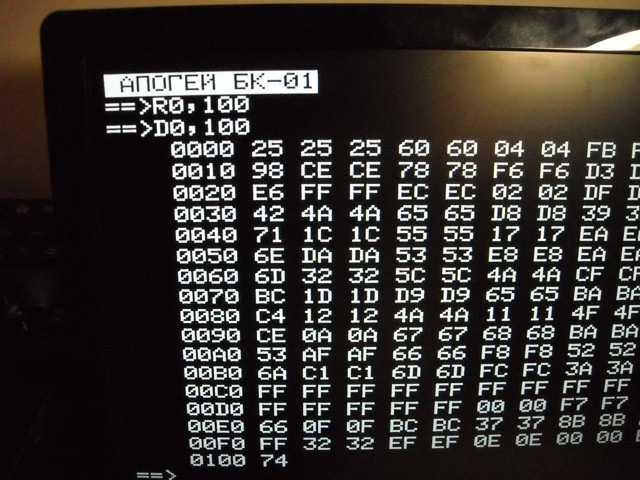
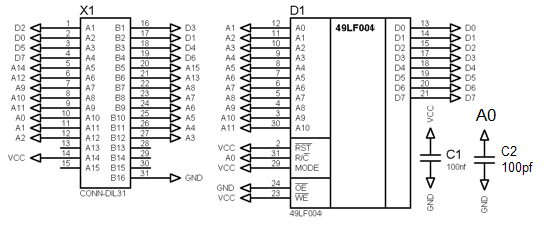
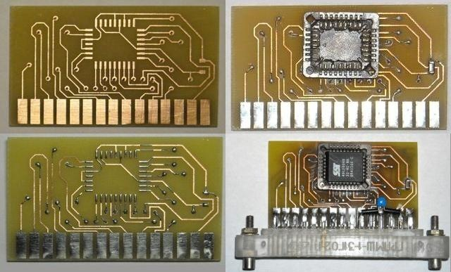
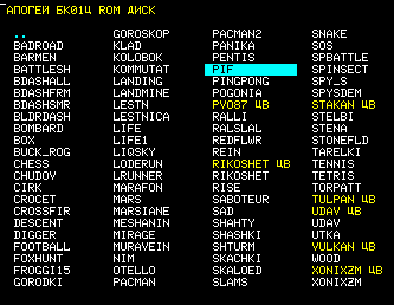
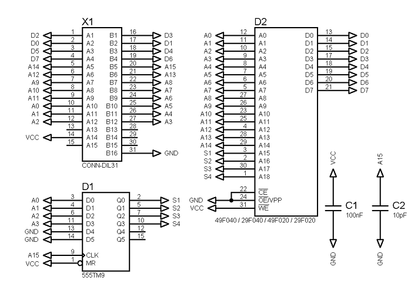
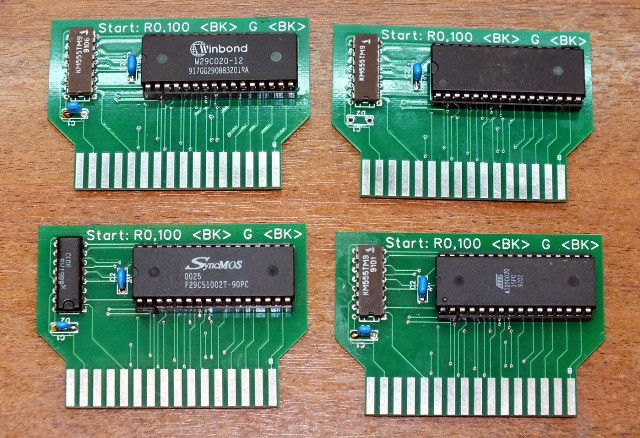

Это плата внешнего ПЗУ для компьютера Апогей БК01. Она нужна, что бы быстро запускать программы. Набор программ вы выбираете сами. Используется микросхема ПЗУ от 128 до 512 кБ. Программы хранятся в сжатом виде, я записал 740 кБ программ на 512 кБ плату. Это почти все разработанные программы для Апогея.
Однажды я вытащил целую горсть микросхем ПЗУ 49LF004 из старых материнских плат. Хотелось использовать их, но на первый взгляд эти ПЗУ не совместимы со стандартными ПЗУ серий 27C, 49F, которые подключаются к Апогею. Отличие в том, что у 49LF шина адреса мультиплексирована. У микросхемы 11 линий адреса и вход ROW/COLUMN. Сначала надо подать на шину адреса старшую часть адреса, затем подать 0 на вход R/C, затем подать младшие 11 бит адреса, затем подать 1 на вход R/C. И только после этого на выходе появятся данные.
Казалось бы, что компьютер, не предназначенный для работы с такой ПЗУ, ничего прочитать из неё не сможет. Но я придумал как. Если подключить линию A0 адреса компьютера, ко входу R/C ПЗУ, а линии адреса A1-A11 компьютера к A0-A10 ПЗУ, то два последовательных чтения из ПЗУ будут загружать старшую и младшую часть адреса идентичными значениями. И новые данные будут появляться на каждом нечетном адресе.
Адрес чтения 0 (000b). Старшая часть адреса - 0 (00b). Вход R/C - 0. На выходе ПЗУ данные для адреса 0hПроверка на реальном компьютере:
Получается, что компьютер может прочитать из такой ПЗУ программу длиной 2 Кб. Только записывать эту программу надо "по диагонали", по адресам: 0, 801h, 1002h, 1803h.
При чтении у нас каждый прочитанный байт дублируется. Мне пришлось разработать программу, машинный код которой представляет собой повторяющиеся байты. Интересная задача? На первый взгляд эта задача кажется сложной, но оказалось, что программа пишется без проблем. Многие команды размером в один байт можно безопасно выполнять два раза, например, чтение или запись в память. Чуточку сложнее с 3-байтными командами, командами сложения и перехода.
В приведенной ниже программе байты получившегося машинного кода указаны после запяточего. Все байты дублируются.
org 0h NOP ; 00 NOP ; 00 NOP ; 00 LD DE, 11h ; 11 11 00 NOP ; 00 LD H, D ; 62 LD H, D ; 62 лишняя команда LD L, D ; 6A LD L, D ; 6A лишняя команда LD BC, 0AE01h ; 01 01 AE XOR (HL) ; AE лишняя команда, портит регистр A. JP 0x00C3 ; C3 C3 00 NOP ; 00 лишняя команда org 013h db 0 байт, 0 байт, 1 байт, 1 байт, 2 байт, 2 байт... org 0C1h DEC HL ; 2B C2: DEC HL ; 2B C3: INC DE ; 13 INC DE ; 13 LD A,(DE) ; 1A LD A,(DE) ; 1A LD (HL),A ; 77 LD (HL),A ; 77 INC HL ; 23 INC HL ; 23 DEC B ; 05 DEC B ; 05 JP NZ,0x00C2 ; C2 C2 00 NOP ; 00 LD DE, 0xC311 ; 11 11 C3 JP 0 ; C3 00 00
Эта программа копирует массив значений после директивы "org 013h" в начало памяти, пропуская каждый четный байт, а затем запускает. В этом массиве содержится наша программа, которая загрузит из ПЗУ все, что нам требуется по правилам ПЗУ:
Адрес чтения 000h (0000b). Старшая часть адреса - 0 (000b). Вход R/C - 0.У Апогея шина адреса всего 16 бит. Для того, что бы подключить ПЗУ с шиной адреса 19 бит нам не потребовалось ни одной дополнительной микросхемы, потому что шина адреса у этой ПЗУ мультиплексирована. Получилась плата внешнего ПЗУ увеличенного объема содержащая всего одну микросхему.
Схема:
Готовая плата:
Меню платы ПЗУ:
Так же я разработал плату на основе стандартной ПЗУ 128-512 Кб и программу формирования прошивки для неё. Плата содежит дополнительную микросхему К555ТМ9, которая расширяет шину адреса компьютера с 16 до 19 бит.
Схема:
Готовая плата:
